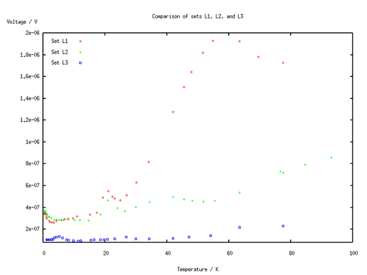
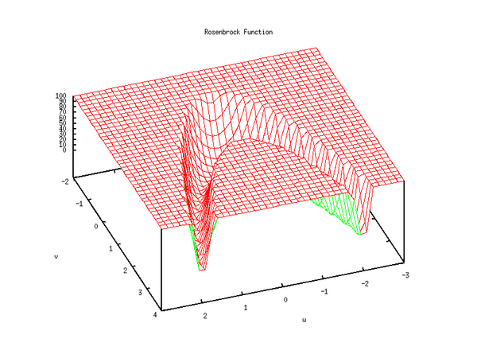
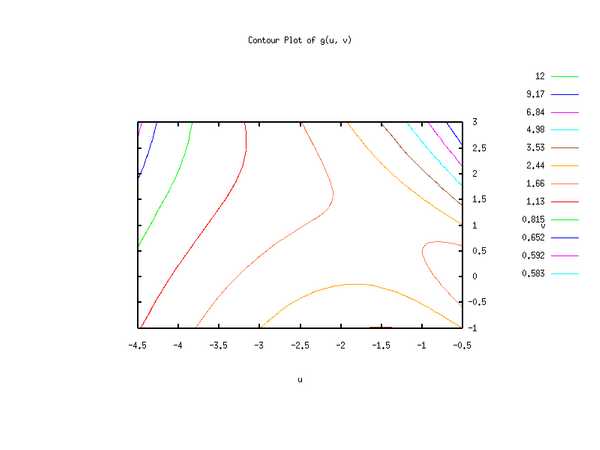
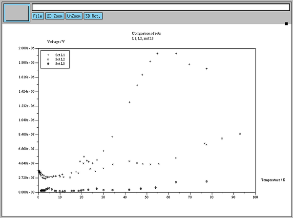
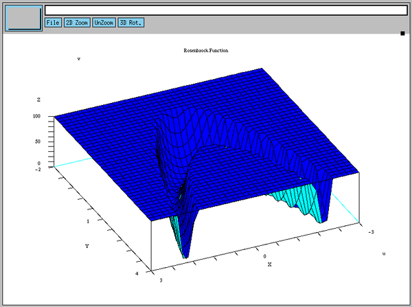
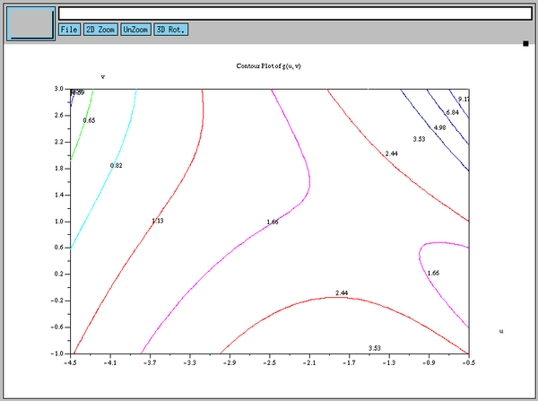
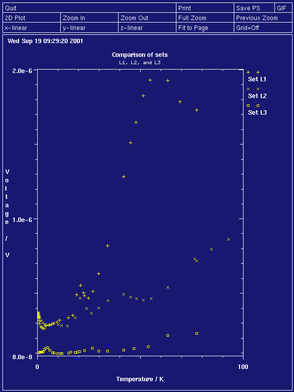
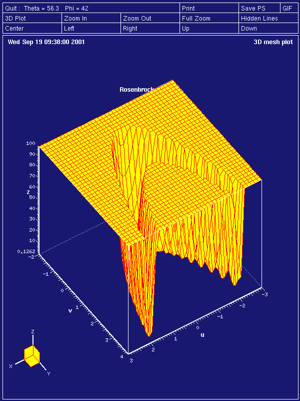
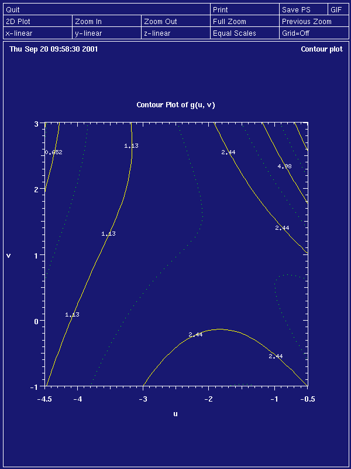

Parts I and II of this little series on numerical math workbenches on GNU/Linux have covered rather dry subjects like matrix manipulations and for-loops. This part brings more color to the screens as it turns to the graphical capabilities of GNU/Octave, Scilab, and Tela. It will deviate from the previous way of presenting the three applications, because the differences of the graphical backends are far too big to allow for a uniform treatment with only a few explanations on the differences.
The article starts with an introduction applicable to all programs. To give the reader maximum benefit, all applications have to solve the same three real life problems. This simplifies the comparison despite the differences of the implementations. In the last part, Octave, Scilab, and Tela have to tackle the given tasks.
{ sin(x)/x for x <> 0
y := f(x) = {
{ 1 for x == 0
cannot be drawn from the above expression, but the function has to be transformed into discrete pairs (x(i), y(i)). This transformation is called sampling. To sample f(x), we pick values x where we are interested in f(x) and compute f for the given x. Any reader who has followed the earlier parts, will immediately recognize that this involves a vector operation.
### GNU/Octave code
function y = f(x)
if x == 0.0
y = 1.0;
else
y = sin(x) ./ x;
endif
endfunction
x = linspace(0.0, 4*pi, 50);
y = f(x);
linspace(start, end, n) returns a vector from start to end, whose n elements are evenly spaced. The vectors x and y can be passed to an appropriate plotting function.
If data already are in vectorized form, they can be displayed immediately.
x = a \ b # Octave, Scilab
or
x = linsolve(a, b) // Tela
Even if we try hard to artificially complicate the calls (yet leaving them useful), we hit the end of the road at
x = linsolve(a, b, "CompletePivoting", "DoIterativeRefinement")
This is, with the two additional parameters -- pivoting strategy and iterative refinement of the solution -- the user completely controls linsolve(). All other ``decisions'' can reasonably be taken by the workbench itself, for example, what algorithm to use if matrix a has a special form.
Contrast this with the 2d-graph of
x = [2.25, 2.27, 2.42, ...]
y = [0.363, 0.360, 0.337, ...]
What options can we think of?
Many more reasonable options are conceivable. The point is: we cannot expect plotting to be as simple to use as is for example solving a system of linear equations -- not because the applications are badly written, but because the topic is inherently more complicated on the user's side. Hence, nobody should be surprised if she ever needs 20 or more lines to define a publication quality plot in Octave, Scilab, or Tela.
To make the competition interesting, I put up problems, which are not too far away from the Real World(tm). Each of the three applications will have to cope with three different types of plots:
Display three sets of data (l1.ascii, l2.ascii, l3.ascii) on a single page. The sets have a different number of data points.
The data are stored as two columns, column 1 holds the x-value, and column 2 the y-value:
0.2808 3.419E-07
0.3711 3.459E-07
0.4882 3.488E-07
...
The graph must show title, axes captions, and legend. The x and y ranges are supplied by the user.
f(u, v) = 100*(v - u^2)^2 + (1 - u)^2
as a 3d-surface in the parameter ranges -3 <= u <= 3 and -2 <= v <= 4.
Annotate the plot with title and axes captions.
g(u, v) = exp(u) * (4*u^2 + 2*v^2 + 4*u*v + 2*v + 1)
with contours, this is, f(u, v) = z for given z in the parameter ranges -4.5 <= u <= -0.5 and -1 <= v <= 3.
The iso-lines are defined by a user-specified ``weight'' function.
( z - z_0 ) 3
z_iso = (z_1 - z_0) * ( --------- ) + z_0
( z_1 - z_0 )
where z_0 and z_1 are the minimum and maximum values of g(u, v) in the plot's range.
Again, annotate the plot with title and axes captions.
All graphics must be rendered for two devices,
You know Gnuplot? Then learning to use GNU/Octave's plot functions will be
a piece of cake. All you need to do is precede the Gnuplot commands with a
``g'' to reach at the Octave equivalent. -- Oh, you haven't tried
Gnuplot yet? Then I will guide you through the examples. However, having a
Gnuplot manual (online or dead-tree edition) ready may be helpful.
For an easier discussion, I have split the code into blocks. Each block gathers commands that belong together. The blocks are labeled with numbers in square brackets, to allow for referencing them in the text.
### [1] Read data set_i into N_i-times-2 matrices
set1 = load("l1.ascii");
set2 = load("l2.ascii");
set3 = load("l3.ascii");
### [2] Reset Gnuplot
graw("reset;");
clearplot;
### [3] Define decorations and plot area
gset title "Comparison of sets L1, L2, and L3";
gset xlabel "Temperature / K";
gset ylabel "Voltage / V";
gset key top left;
gset xrange [0 : 100];
gset yrange [8e-8 : 2e-6];
### [4] Plot data
hold on;
gplot set1 title "Set L1" with points;
gplot set2 title "Set L2" with points;
gplot set3 title "Set L3" with points;
hold off;
### [5] Switch to PostScript output and plot into file
gset terminal push;
gset terminal postscript;
gset output "oct1.eps";
replot;
gset terminal pop;
gset output;
 The output to the Postscript terminal, block [6], produced a printable version (eps) of the graphics.
Block [1] should be clear from the previous articles. The first interaction with Gnuplot happens in [2], where Gnuplot is reset to a known state and the X11-plot window gets cleared. A known state is helpful when still experimenting with Gnuplot's options. In our case reseting is unnecessary, but it does not hurt.
The block of gset commands, [3] is self explaining except
gset key top left
which means: ``put the legend (or key) inside the plotting area at the
north-west corner''. xrange and yrange with their
special interval syntax set the width and height of the plot range.
Now, the actual data can be rendered into the plot window [4]. Because the
data sets have different sizes, they cannot be gathered in a single matrix.
Hence, each data set must be plotted by itself, and Gnuplot must be told --
with hold on -- that it should collect all
gplot commands until the last plot of the set is completed and
hold off is called. The calls to gplot essentially
contain the data matrix
gplot set1
The title, which shows up in the plot's legend, is assigned in the call to
gplot, too.
Block [5] is specific to the way Gnuplot works. For each plot it uses
a terminal and an output file (remember that in UN*X
everything is a file, as for example is the console). When Gnuplot is running
under X, the terminal type defaults to X11 and output file defaults to
Gnuplot's X11-graphic window. Both, terminal and
output file can be changed independently with gset
commands. Thus, to get the same graphics in a different format, we switch from
the current terminal to Postscript, and put an ordinary file's name at the
output. Function replot replays all plot commands for us, we
do not have to write them again. After that the terminal and output settings
are undone, which is optional, but helpful if the user wants to twiddle some
more gset's and repeatedly check their influence on the graph's
appearance.
### [1] Define function
function z = f(u, v)
## truncated Rosenbrock function
z = 100.0*(v - u.^2).^2 + (1.0 - u).^2;
zv = z(:);
zv(find(zv > 100.0)) = 100.0;
z = reshape(zv, size(z));
endfunction
### [2] Sample function f()
x = linspace(-3, 3, 40);
y = linspace(-2, 4, 40);
[xx, yy] = meshgrid(x, y);
z_splot = splice_mat(xx, yy, f(xx, yy));
### [3] Reset Gnuplot
graw("reset;");
clearplot;
### [4] Define decorations and viewing direction
gset data style line;
gset title "Rosenbrock Function";
gset xlabel "u";
gset ylabel "v";
gset view 30, 160;
gset hidden;
gset nokey
gset parametric;
### [5] Plot
gsplot z_splot;
### [6] Switch to PostScript output and plot into file
gset terminal push;
gset terminal postscript;
gset output "oct2.eps";
replot;
gset terminal pop;
gset output;
gset noparametric;
system("gzip --best --force oct2.eps");
 A printer-ready version (eps.gz) is available, too.
Again the first block, [1], should be easy to understand for anyone who has
read Part 1 and 2 of this series for it only uses known functions. In
contrast, [2] introduces two new functions. Out friend linspace()
quickly generates two vectors which will define where f(u, v) will be
evaluated: from vectors x and y, a grid is constructed,
this is, two matrices xx and yy, where each pair of
matrix elements (xx(i, j), yy(i, j)),
1 <= i, j <= 40, define a (grid-)
point at which function z = f(u, v) will be evaluated.
The matrix of all z-values at the grid points then simply is zz
= f(xx, yy). However, we are not done at this point, because Octave
requires to pass a specially formatted matrix to the 3d-plot
function gsplot.
The user-defined function splice_mat() does exactly the needed operation: collect the grid data xx and yy along with the z-values in matrix z_plot. Matrix z_plot can be handed over to gsplot without further ado (given Gnuplot is in parametric mode. (we will be in parametric mode and for the given kind of problem parametric mode is the only way to go (and I don't want to introduce another level of parenthesis (really!))))
Block [4], a collection of gsets, looks almost familiar.
Some new settings are
help -i gsplot from Octave, or
info octave --node='Three-Dimensional Plotting' from the
shell.)After so much preparation, the actual plot command, gsplot
z_splot in [5] looks trivial.
The Postscript block [6] is similar to [5] in Section ``Octave: 2d discrete data plot''. The only additional job [6] does is gzipping the eps-file. In general system(``shell-commands'') executes shell-commands in a sub-shell. Obviously, this is extremely useful when interacting with an external application, like gzip(1).
### [1] Define function
function z = g(u, v)
z = exp(u) .* (4.0*u.^2 + 2.0*v.^2 + 4.0*u.*v + 2.0*v + 1.0);
endfunction
### [2] Define weight function for iso-line distances
function y = pow_weight(x, n)
## Map interval X onto itself, weight with N-th power.
d = max(x) - min(x);
y = d*((x - min(x))/d).^n + min(x);
endfunction
### [3] Sample function g()
x = linspace(-4.5, -0.5, 40);
y = linspace(-1.0, 3.0, 40);
[xx, yy] = meshgrid(x, y);
zz = g(xx, yy);
z_splot = splice_mat(xx, yy, zz);
### [4] Compute iso-line distances
iso_levels = pow_weight(linspace(min(min(zz))*1.01, ...
max(max(zz))*0.99, 12), 3.0);
il_str = sprintf("%f,", iso_levels);
il_str = il_str(1 : length(il_str)-1); # remove last ","
### [5] Reset Gnuplot
graw("reset;");
clearplot;
### [6] Define decorations and viewing direction
gset data style line;
gset title "Contour Plot of g(u, v)";
gset xlabel "u";
gset ylabel "v";
gset contour base;
gset nosurface;
gset view 0, 0;
eval(sprintf("gset cntrparam levels discrete %s", il_str));
gset parametric;
### [7] Plot
gsplot z_splot;
### [8] Switch to PostScript output and plot into file
gset terminal push;
gset terminal postscript;
gset output "oct3.eps";
replot;
gset terminal pop;
gset output;
gset noparametric;
 A printable version (eps) is available, too.
After working through the 2d discrete and the 3d function plot examples, the top three blocks [1-3] of the contour function script should not raise many questions. In block [4] however, I have to prepare a trick, which I must play at the end of block [6]. The job is to plot contour lines with a user-defined function. The values of this function and therefore the positions of the iso-lines are not known in advance.
Gnuplot offers several ways to define iso-lines, for example, automatic
computation of a given number of (linearly spaced) contours or defining a
minimum and a maximum contour value with a fixed increment between two
adjacent contours. Our problem requires a more general solution because the
iso-lines are not equally spaced along the z-axis. For completely
arbitrary iso-line values, as the third way if specifying contour lines,
Gnuplot has the following gset command
gset cntrparam discrete z1, z2, ..., zN
where z1, z2, ..., zN are the z-values of the iso-lines given as floating point literals. Thus,
gset cntrparam discrete 0.2, 0.4, 0.8
is a perfect call, whereas
z1 = 0.2
z2 = 0.4
z3 = 0.8
gset cntrparam discrete z1, z2, z3
is nothing but a syntax error as would be
gset cntrparam discrete iso_levels
Remember, gset needs floating point literals!
We are stuck unless we apply a bit of magic. If we present a complete
gset line to Octave, one where the values of vector
iso_levels are ``interpolated'' into (Perl programmers do this all day
long), the race is won. Here is how the trick is played:
# Convert iso_levels to comma-separated string. Octave reuses
# the format specifier list if there are more items to print than
# there are format specifiers. Don't try this with C's printf :-)
il_string = sprintf("%f,", iso_levels)
# Remove comma past last contour value in the string.
il_string = il_string(1 : length(il_string)-1)
# Play interpolation trick a second time
gset_string = sprintf("gset cntrparam levels discrete %s", il_string);
# Execute the command which is stored in the variable gset_string
eval(gset_string);
For readers who do not like abstract descriptions, this is a transcript of a session (where long lines have been edited to fit):
octave:10> il_string = sprintf("%f,", iso_levels)
il_string = 0.583444,0.592029,0.652120,0.815224,1.132847,1.656497, \
2.437679,3.527900,4.978667,6.841486,9.167864,12.009307,
octave:11> il_string = il_string(1 : length(il_string)-1)
il_string = 0.583444,0.592029,0.652120,0.815224,1.132847,1.656497, \
2.437679,3.527900,4.978667,6.841486,9.167864,12.009307
octave:12> gset_string = sprintf("gset cntrparam levels discrete %s", \
il_string)
gset_string = gset cntrparam levels discrete 0.583444,0.592029, \
0.652120,0.815224,1.132847,1.656497,2.437679,3.527900, \
4.978667,6.841486,9.167864,12.009307
In the script, no temporary variable gset_string has been introduced, but sprintf() sends its output directly to eval().
Block [6]: Gnuplot does not excel in plotting contours. In fact the
GNuplot user-manual suggests not to use it directly. Anyhow, we proceed,
because the out approach is easier to understand. The following three
gsets switch Gnuplot into contour-mode:
gset contour base # draw contours in the xy-plane
gset nosurface # do not draw the surface's mesh
gset view 0, 0 # view the xy-plane from above
Blocks [7] and [8] closely resemble those we have already seen in Section ``Octave: 2D Discrete Data Plot'' and ``Octave: 3D Function Plot''.
More demo plots of Gnuplot can be found at http://www.gnuplot.org/gnuplot/gpdocs/all2.htm
And now for a rather different approach ...
Scilab goes a different way to cope with the complexity, which we have
discussed in Section Complexity at Large.
In contrary to Gnuplot, Scilab does not strictly separate plotting and
setting, but offers a plethora (buckle up, then try: apropos
plot) of different plot commands to produce different kinds of plots.
Furthermore, the plot functions themselves take many arguments that change the
plots' appearances. Some of the arguments are so cryptic that you almost
certainly will want to have the appropriate man-page within sight.
For the reader who wants to look at the on-line help, but does not have Scilab installed, the Scilab manual is available online.
// [1] Read data set_i into N_i-times-2 matrices
set1 = read("l1.ascii", -1, 2);
set2 = read("l2.ascii", -1, 2);
set3 = read("l3.ascii", -1, 2);
// [2] Clear plot window's contents
xbasc();
// [3] Plot data; 1st plot command defines plot area
plot2d(set1(:, 1), set1(:, 2), -1, "011", ..
rect = [0, 8e-8, 100, 2e-6]);
plot2d(set2(:, 1), set2(:, 2), -2, "000");
plot2d(set3(:, 1), set3(:, 2), -3, "000");
// [4] Define decorations
xtitle(["Comparison of sets", "L1, L2, and L3"], ..
"Temperature / K", "Voltage / V");
legends(["Set L1 ", "Set L2 ", "Set L3 "], [-1, -2, -3], 2);
// [5] Save plot window's contents to file; convert file to PostScript
xbasimp(0, "sci1.xps");
unix("scilab -save_p sci1.xps.0 Postscript");
 The Encapsulated Postscript output is available, too.
Block [1] reads the data from disk-files into matrices.
Block [2] clears the graphics window (if it exists). Even more important, xbasc() deletes all graphics commands that have been recorded for the window. The mnemonic for xbasc() is x-bas-c for x11-function, basic level, clear.
Tip: When playing with Scilab's plot functions, preceding the plot function call with a clear command often saves keystrokes
xbasc(); plot2d(...);
in one line can be recalled for editing with a single C-p and replayed with a single hit of the return-key.
In Block [3] the enigma raises its head! What in the world does
plot2d(set1(:, 1), // vector of x-values
set1(:, 2), // vector of y-values
-1, // style index
"011", // decoration control
rect = [0, 8e-8, 100, 2e-6]); // plot dimensions
do? I have added a comment for each argument, yet, to what does a ``style index'' of -1 refer to? A badly dressed hacker? And what does the string in ``decoration control'' mean?
0' is no caption,
'1' tells Scilab to display a caption.0' to '8'. Please see plot2d()
documentation for details.
Here, we use '1' for the first plot and '0' for
all others. '1' lets the user explicitely specify the plot range
in the rect argument to plot2d(). If
plot2d() is called with '0', the size of a previous plot is
used and no size computation is done.
1' for the first plot, which gives
axes on the bottom and the left hand side. The following plots use
'0', which means nothing is drawn around the plot.Gee, that is quite a mouthful! Block [4] will give us some rest.
xtitle([title_line1; title_line2; ...], x_label, y_label)
Puts a possibly multi-line title into an existing plot and optionally decorates the x and y-axis with labels.
legends([legend_1, legend_2, ...], [style_1, style_2, ...], position)
Places a legend in a plot where the position is given by position. position = 1 refers to the north east corner. The remaining corners are enumerated counter-clockwise, this is, position = 2 will put the legend in the north west corner. The style_i parameters refer to the same numbers that we have used as style indices in the plot2d() calls. They determine which kind of marker or line is drawn right next to the legend's text. The text is given by legend_i.
Finally, Block [5] converts the data in the graphics window to a Postscript file.
xbasimp(0, "sci1.xps")
Replays all graphics commands for window 0 (our only graphics window) into sci1.xps. The function's name has nothing to do with a X11-daemon named ``bas'', but has its stem from x11 and basic level as xbasc(). The ``imp'' comes from the French word ``imprimer'', which means ``to print''. From which language does ``fsck'' come from? N vcls, I guess.
File sci1.xps almost contains valid Postscript, but not quite. The contents must be processed by Scilab
scilab -save_p sci1.xps.0 Postscript
adding the correct Postscript header and repositioning the graphics on the page. The external Scilab is called by the unix(``shell-commands'') function.
// [1] Define function
function z = f(u, v)
// truncated Rosenbrock function
z = 100.0*(v - u.^2).^2 + (1.0 - u).^2
z(find(z > 100)) = 100;
endfunction
// [2] Define sampling grid for f()
x = linspace(-3, 3, 40);
y = linspace(-2, 4, 40);
// [3] Clear plot window's contents
xbasc();
// [4] Plot
fplot3d(x, y, f, 65, 1.5);
// [5] Define decoration
xtitle("Rosenbrock Function", "u", "v");
// [6] Save plot window's contents to file; convert file to PostScript
xbasimp(0, "sci2.xps");
unix("scilab -save_p sci2.xps.0 Postscript; " ..
+ "gzip --best --force sci2.eps");
 Here is the gzipped Encapsulated Postscript version (eps.gz) of the graphics.
After so much new stuff in Section Scilab: 2D Discrete Data Plot the only unknown here hides in Block [4]:
fplot3d(x_vector, y_vector, function_of_x_and_y, alpha, theta)
The vectors x_vector and y_vector define the grid on which function_of_x_and_y is evaluated. Comparing fplot3d() with Octave's gsplot we notice, that Scilab generates the grid for us. Function fplot3d() is a convenience function, built on top of
plot3d(x_vector, y_vector, z_matrix, alpha, theta)
which resembles gsplot (and Tela's mesh()).
The parameters theta and alpha, define the elevation of the view point and the rotation around the z-axis respectively.
// [1] Define function
function z = g(u, v)
z = exp(u) .* (4.0*u.^2 + 2.0*v.^2 + 4.0*u.*v + 2.0*v + 1.0)
endfunction
// [2] Define weight function for iso-line distances
function y = pow_weight(x, n)
// Map interval X onto itself, weight with N-th power.
d = max(x) - min(x)
y = d*((x - min(x))/d).^n + min(x)
endfunction
// [3] Define sampling grid for g()
x = linspace(-4.5, -0.5, 40);
y = linspace(-1.0, 3.0, 40);
// [4] Evaluate g() at points defined by X and Y
z = eval3d(g, x, y);
// [5] Compute iso-line distances
iso_levels = pow_weight(linspace(min(z)*1.01, max(z)*0.99, 12), 3.0);
// [6] Clear plot window's contents
xbasc();
// [7] Set format of iso-line annotation and plot
xset("fpf", "%.2f");
contour2d(x, y, z, iso_levels);
// [8] Define decoration
xtitle("Contour Plot of g(u, v)", "u", "v");
// [9] Save plot window's contents to file; convert file to PostScript
xbasimp(0, "sci3.xps");
unix("scilab -save_p sci3.xps.0 Postscript");
 The output is available as printer-ready version (eps), too.
Remember the difficulties we had with the user-defined iso-lines in Octave/Gnuplot? The problem can be solved in Scilab without any tricks, magic, or bribery. As with plot3d(), Scilab defines a convenience function
fcontour2d(x_vector, y_vector, function_of_x_and_y, levels)
as a wrapper around
contour2d(x_vector, y_vector, z_matrix, levels)
However, as we must know the maximum and minimum value of g(u, v) on the grid, fcontour2d() would not save us anything. Thus, Block [4] computes g(u, v) on the grid defined by x and y:
z = eval3d(g, x, y)
In Block [7], we use z and iso_levels from
Block [5]. The xset() call sets the floating
point format (``fpf'') to
``%.2f'', which is a C-printf format specifier that forces all
contour line numbers to have two digits after the decimal point.
All other blocks only use functions already discussed in the other plots.
More demo plots of Scilab are found at INRIA's Scilab site.
Scilab has much more to offer than the functions we have seen right above. For example, it supplies
Surface facets which are the building blocks for 3d-environments. (See for example Enrico Segre's amazing Scigallery)
In the sections on Octave and
Scilab, we have seen that both applications save auxiliary ``state'' of
the plot window. Gnuplot does so to the max: gplot or
gsplot have almost no parameters. The state is controlled by
gset commands. Scilab stores some state of the plot window as, for
example, the legend and title.
Tela uses the external application PlotMTV to display graphs. With PlotMTV,
Tela is located on the other side of the spectrum: its plots have no state,
and all information about the plot has to go into the call to the actual
plotting function. The advantage of Tela's approach is that multiple plots do
not interfere (unless we force them to do so by calling hold(on)
or hold(off) as we will see soon). The downside is that the calls
to plotting functions can get rather long.
As has been in the discussions of the other plotting applications, it is helpful to have a PlotMTV manual within reach.
// [1] Read data set_i into N_i-times-2 matrices
set1 = import1("l1.ascii");
set2 = import1("l2.ascii");
set3 = import1("l3.ascii");
// [2] Define plotting function
function do_plot(d1, d2, d3)
{
hold(on); // postpone actual plotting until hold(off)
// render set 1
plot(d1[:, 1], d1[:, 2],
"linestyle", 0,
"markertype", 2,
"linelabel", "Set L1",
// Define decorations
"toplabel", "Comparison of sets",
"subtitle", "L1, L2, and L3",
"xlabel", "Temperature / K",
"ylabel", "Voltage / V",
// Define plot area
"xmin", 0,
"xmax", 100,
"ymin", 8e-8,
"ymax", 2e-6);
// render set 2
plot(d2[:, 1], d2[:, 2],
"linestyle", 0,
"markertype", 3,
"linelabel", "Set L2");
// render set 3
plot(d3[:, 1], d3[:, 2],
"linestyle", 0,
"markertype", 4,
"linelabel", "Set L3");
hold(off); // plot!
};
// [3] Plot to X11 window
do_plot(set1, set2, set3);
// [4] Plot into a postscript file
plotopt("-o tela1.eps -printcmd 'cat' -noxplot -print");
do_plot(set1, set2, set3);
Hmm, this script looks differently! It does -- because I have to play another trick that has to do with the statelessness plot functions. As Tela ``forgets'' the parameters after displaying graphics in an X11-window, I would have to retype everything with output redirected to a Postscript file. Well, code duplication is known to be the root of many (not all) evil. Thus, the Tela plots are wrapped into a function. The further strategy is displaying the plot in an X11 window, changing the output file and type, which is somewhat analogous to Gnuplot, and then plotting again into an eps-file:
do_plot(...); // display plot in X11 window
plotopt("-o foo.eps -printcmd 'cat' -noxplot -print"); // redirect output
do_plot(...); // render plot in Encapsulated Postscript file foo.eps
 Encapsulated Postscript version of the graphics.
Function do_plot in Block [2] takes care of all output by using function plot(). The general structure of Tela's plot(), in fact all Tela plot functions, is first passing the mandatory data arguments as vectors or matrices followed by optional key-value strings.
plot(x_vector, y_vector // data
"option_key1", "option_value1", // option 1
"option_key2", "option_value2", // option 2
...
"option_keyN", "option_valueN"); // option N
Note that putting one key-value pair per line enhances the readability of the whole call.
The key-value strings themselves are self-explaining. Non-obvious associations like linestyle => 0 (= invisible line) or markertype => 2 (= plus sign) must be looked up in the manual or in a reference plot which shows all available line styles.
function v = linspace(a, b; n)
{
if (isdefined(n)) nn = n else nn = 100;
v = a + (0 : nn - 1) * (b - a) / (nn - 1)
};
// [1] Define function
function z = f(u, v)
{
// truncated Rosenbrock function
z = 100.0*(v - u^2)^2 + (1.0 - u)^2;
z[find(z > 100.0)] = 100.0;
};
// [2] Sample function f()
x = linspace(-3.0, 3.0, 40);
y = linspace(-2.0, 4.0, 40);
[xx, yy] = grid(x, y);
zz = f(xx, yy);
// [3] Define plot function
function do_plot(x, y, zz)
{
mesh(zz,
"xgrid", x,
"ygrid", y,
"toplabel", "Rosenbrock Function",
"xlabel", "u",
"ylabel", "v",
"hiddenline", "true",
"eyepos.z", 2.0)
};
// [4] Render plot into X11 window
do_plot(x, y, zz);
// [5] Plot into a postscript file
plotopt("-o tela2.eps -printcmd 'cat' -noxplot -print");
do_plot(x, y, zz);
system("gzip --best --force tela2.eps");
 An gzipped Encapsulated Postscript version (eps.gz) of the plot is available, too.
Tela has no built in linspace() function, so I quickly define one.
Block [2] resembles Block [2] in Section ``Octave: 3D Function Plot'', where Octave's meshgrid() has been replaced by Tela's grid().
The 3d-mesh plotting function mesh() takes a matrix of z-values as its first argument; the grid-specification is given in the options:
mesh(z_matrix,
"xgrid", x_vector,
"ygrid", y_vector);
Of course, the sizes of z_matrix, x_vector, and y_vector must be compatible.
function v = linspace(a, b; n)
{
if (isdefined(n)) nn = n else nn = 100;
v = a + (0 : nn - 1) * (b - a) / (nn - 1)
};
// [1] Define function
function z = g(u, v)
{
z = exp(u) * (4.0*u^2 + 2.0*v^2 + 4.0*u*v + 2.0*v + 1.0)
};
// [2] Define weight function for iso-line distances
function y = pow_weight(x, n)
{
// Map interval X onto itself, weight with N-th power.
d = max(x) - min(x);
y = d*((x - min(x))/d)^n + min(x)
};
// [3] Sample function f()
x = linspace(-4.5, -0.5, 40);
y = linspace(-1.0, 3.0, 40);
[xx, yy] = grid(x, y);
zz = g(xx, yy);
// [4] Compute iso-line distances
iso_levels = pow_weight(linspace(min(zz)*1.01, max(zz)*0.99, 12), 3.0);
il_str = sformat("``", iso_levels);
il_str = il_str[2 : length(il_str)];
// [5] Define plot function
function do_plot(x, y, zz, iso_levels_str)
{
contour(zz,
"xgrid", x,
"ygrid", y,
"toplabel", "Contour Plot of g(u, v)",
"xlabel", "u",
"ylabel", "v",
"contours", iso_levels_str)
};
// [6] Render plot into X11 window
do_plot(x, y, zz, il_str);
// [7] Plot into a postscript file
plotopt("-o tela3.eps -printcmd 'cat' -noxplot -print");
do_plot(x, y, zz, il_str);
 Also available is an Encapsulated Postscript printer version.
Tela requires us to play a similar trick on PlotMTV as we had to when convincing Octave to pass the contours' values to Gnuplot. However, the trick in Block [4] is not as involved. Again, the first step is to compute the vector iso_levels. Function sformat() works analogously to Octave's sprintf(), though the vectors are differently formatted as the transcript shows (il_str has been edited to fit the line).
>il_str = sformat("``", iso_levels);
>il_str
"#(0.583444, 0.592029, 0.65212, 0.815224, 1.13285, 1.6565, \
2.43768, 3.5279, 4.97867, 6.84149, 9.16786, 12.0093)"
PlotMTV does understand a vector that is enclosed in parenthesis, but the leading sharp-sign must go
il_str = il_str[2 : length(il_str)];
In this form, il_string can be passed as value to the option key
contours in function contour().
More demo plots of PlotMTV can be found at ORNL and at HSC.
By the way, PlotMTV suits perfectly as graphical backend for home grown scripts and programs. The PlotMTV manual consistently helps the reader to develop programmatic interfaces for her own applications.
We have seen how to get publication ready data and function plots from GNU/Octave, Scilab, and Tela. Sometimes the solutions have been intricate, because of implementations' restrictions. However, all problems could be solved.
The effort in creating pleasantly looking graphs appears to be high and almost independent of the chosen application.
 Christoph Spiel
Christoph Spiel